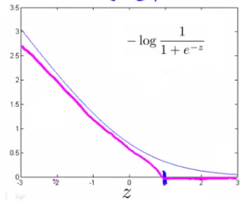
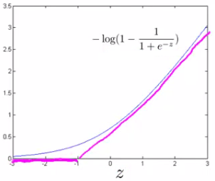

Optimization Objective - 27 December, 2016
Tags: machine learning
The Support Vector Machine (SVM) is yet another type of supervised machine learning algorithm. It is sometimes cleaner and more powerful.
Cost function
\(\text{cost}_1(z)\) and \(\text{cost}_0(z)\) (respectively, note that \(\text{cost}_1(z)\) is the cost for classifying when y=1, and \(\text{cost}_0(z)\) is the cost for classifying when y=0)
 
\[J(\theta) = C\sum_{i=1}^m y^{(i)} \ \text{cost}_1(\theta^Tx^{(i)}) + (1 - y^{(i)}) \ \text{cost}_0(\theta^Tx^{(i)}) + \dfrac{1}{2}\sum_{j=1}^n \Theta^2_j\]
Note that the hypothesis of the Support Vector Machine is not interpreted as the probability of y being 1 or 0 (as it is for the hypothesis of logistic regression). Instead, it outputs either 1 or 0. (In technical terms, it is a discriminant function.)
\[h_\theta(x) =\begin{cases} 1 & \text{if} \ \Theta^Tx \geq 0 \\ 0 & \text{otherwise}\end{cases}\]
Large Margin Intuition
A useful way to think about Support Vector Machines is to think of them as Large Margin Classifiers.
- If y=1, we want
\(\Theta^Tx \geq 1\)(not just ≥0) - If y=0, we want
\(\Theta^Tx \leq -1\)(not just <0)
In SVMs, the decision boundary has the special property that it is as far away as possible from both the positive and the negative examples.
This large margin is only achieved when C is very large. Data is linearly separable when a straight line can separate the positive and negative examples. If we have outlier examples that we don't want to affect the decision boundary, then we can reduce C. Increasing and decreasing C is similar to respectively decreasing and increasing λ, and can simplify our decision boundary.
Kernels
Kernels allow us to make complex, non-linear classifiers using Support Vector Machines.
\[f_i = similarity(x, l^{(i)}) = \exp(-\dfrac{||x - l^{(i)}||^2}{2\sigma^2})\]
This "similarity" function is called a Gaussian Kernel. It is a specific example of a kernel.
If \(x \approx l^{(i)}\), then \(f_i = \exp(-\dfrac{\approx 0^2}{2\sigma^2}) \approx 1\)
If x is far from \(l^{(i)}\), then \(f_i = \exp(-\dfrac{(large\ number)^2}{2\sigma^2}) \approx 0\)
One way to get the landmarks is to put them in the exact same locations as all the training examples. This gives us m landmarks, with one landmark per training example.
Using kernels to generate f(i) is not exclusive to SVMs and may also be applied to logistic regression. However, because of computational optimizations on SVMs, kernels combined with SVMs is much faster than with other algorithms, so kernels are almost always found combined only with SVMs.
Choosing SVM Parameters
- If C is large, then we get higher variance/lower bias
If C is small, then we get lower variance/higher bias
With a large
\(σ^2\), the features fi vary more smoothly, causing higher bias and lower variance.- With a small
\(σ^2\), the features fi vary less smoothly, causing lower bias and higher variance.
Using An SVM
- Choice of parameter C
- Choice of kernel (similarity function)
- No kernel ("linear" kernel) -- gives standard linear classifier
- Choose when n is large and when m is small
- Gaussian Kernel (above) -- need to choose σ2
- Choose when n is small and m is large
Logistic Regression vs. SVMs
- If n is large (relative to m), then use logistic regression, or SVM without a kernel (the "linear kernel")
- If n is small and m is intermediate, then use SVM with a Gaussian Kernel
- If n is small and m is large, then manually create/add more features, then use logistic regression or SVM without a kernel. In the first case, we don't have enough examples to need a complicated polynomial hypothesis. In the second example, we have enough examples that we may need a complex non-linear hypothesis. In the last case, we want to increase our features so that logistic regression becomes applicable.
Note: a neural network is likely to work well for any of these situations, but may be slower to train.